Service Areas – Savannah & the Lowcountry
Eighteen areas, and genuinely different foundation problems in each. Historic piers downtown, salt and shallow groundwater on the islands, fill settlement out west – written up one place at a time.
Pick your area
Chatham County plus Bryan, Effingham and Liberty. Each page covers what actually fails in that specific place and why – the construction era, the soil and the moisture conditions are not the same from one side of the county to the other.
Savannah proper
The city itself, from the historic core out to the Southside.
Downtown & Historic Savannah
Brick pier foundations under houses older than the state's building codes, on ground that has been built up and built over for nearly three centuries.
Foundation repair in Downtown & Historic Savannah →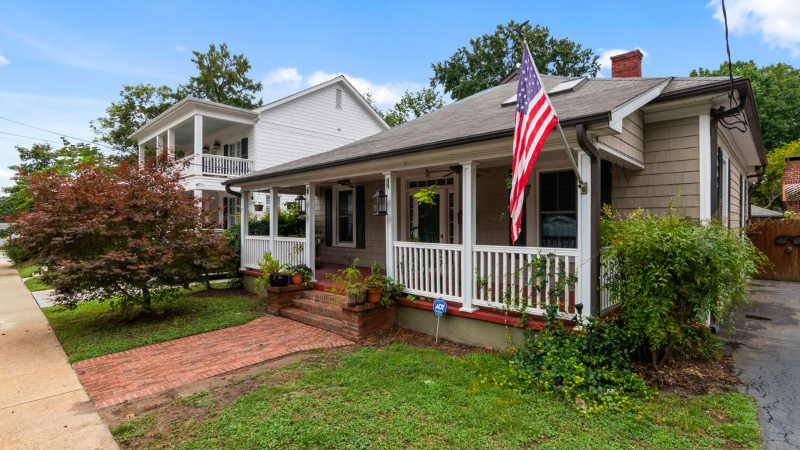
Midtown Savannah & Ardsley Park
Wood-frame houses from the 1910s and 1920s standing on some of the city's worst-draining ground – old piers plus a stormwater basin the city is still rebuilding.
Foundation repair in Midtown Savannah & Ardsley Park →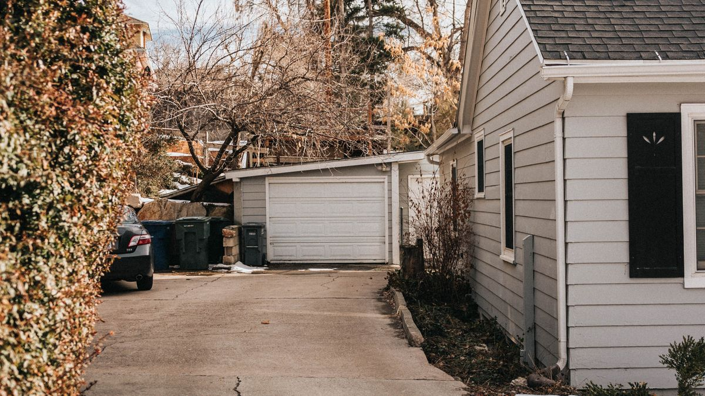
Southside Savannah
Savannah's first big planned suburb and everything built after it – late-fifties through seventies housing now well into its second half-century.
Foundation repair in Southside Savannah →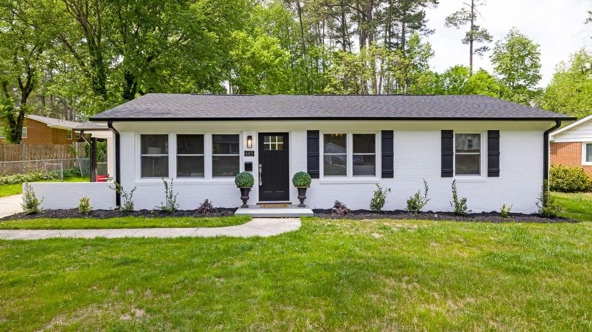
Georgetown
A large seventies and eighties suburb southwest of the city, across the Little Ogeechee – now at the age where original foundations start showing their history.
Foundation repair in Georgetown →The islands and the riverside
Tidal ground, salt air, and the shallowest water table in the county.
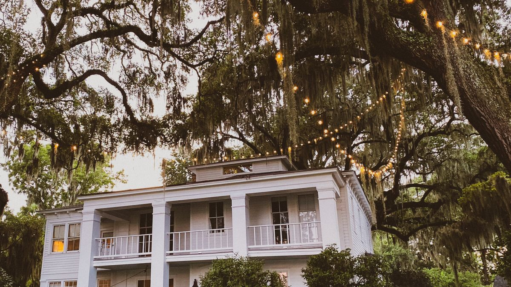
Isle of Hope
Nineteenth-century summer cottages on a bluff above the Skidaway River – the oldest residential foundations in the county outside the historic district.
Foundation repair in Isle of Hope →Thunderbolt
A working river town on the Wilmington – shrimp docks, compact older houses, and ground that has been at the water's edge since 1733.
Foundation repair in Thunderbolt →
Whitemarsh Island
The first island off the mainland – mostly built since the 1970s, ringed by Richardson and Turner Creeks, and tidal on almost every side.
Foundation repair in Whitemarsh Island →Wilmington Island
Sixties and seventies ranch houses on pier-and-beam foundations, between the Wilmington River and the marsh – the toughest moisture conditions in the county.
Foundation repair in Wilmington Island →Skidaway Island
A private island community whose oldest homes are now past fifty, built among tidal marsh and maritime forest.
Foundation repair in Skidaway Island →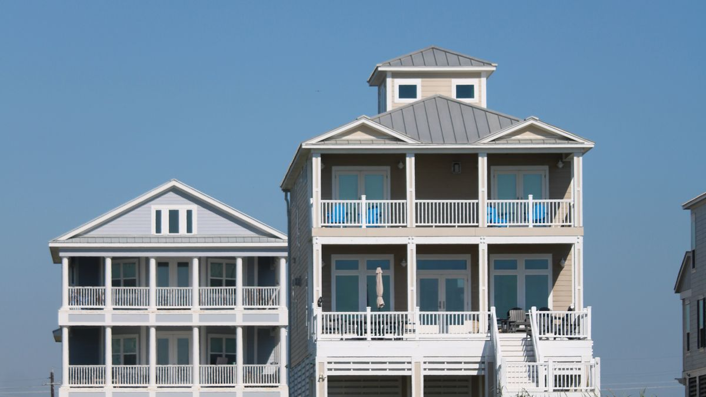
Tybee Island
A barrier island where base flood elevation is nine feet and the city's own grant program is lifting houses higher still – the most demanding structural environment in the county.
Foundation repair in Tybee Island →West Chatham
Port-side industry, mid-century workforce housing, and the fastest new build in Georgia.
Garden City
Built in 1939 to house port and factory workers, and still sitting alongside the busiest single container terminal on the East Coast.
Foundation repair in Garden City →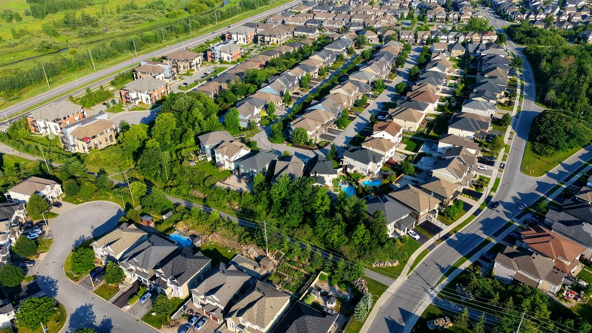
Port Wentworth
An old sugar-refinery town that has more than tripled since 2000 – so a house here is usually either eighty years old or eight.
Foundation repair in Port Wentworth →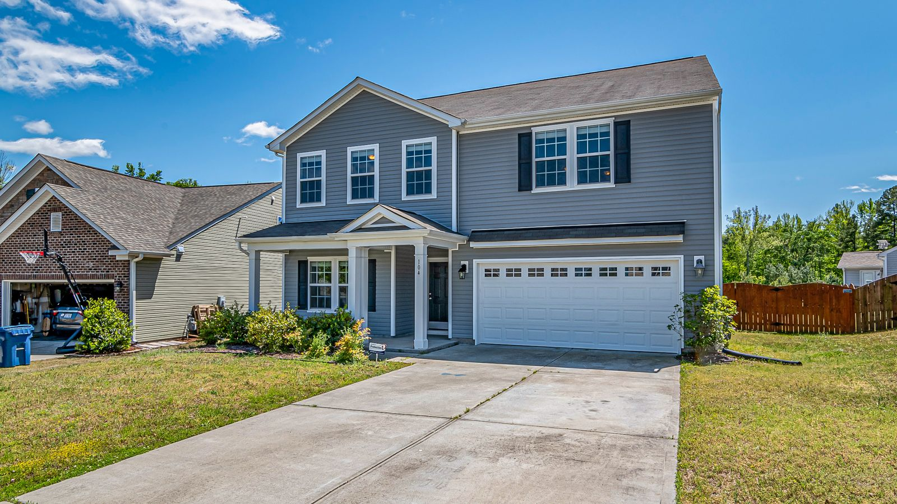
Pooler, GA
One of Georgia's fastest-growing cities, and almost all of it built recently on ground that used to be farm and forest.
Foundation repair in Pooler, GA →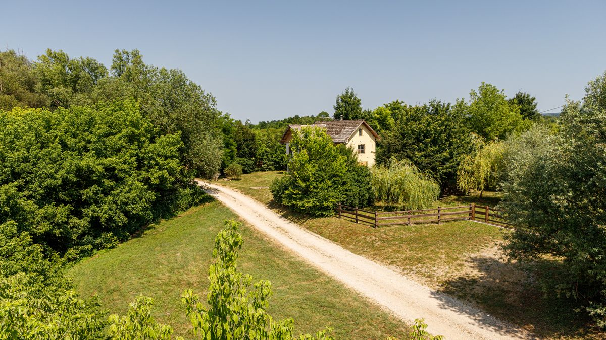
Bloomingdale
The rural northwestern corner of Chatham County – bigger lots, older houses, and properties that handle their own drainage.
Foundation repair in Bloomingdale →Beyond Chatham County
Bryan, Effingham and Liberty – same coastal-plain soil, different permitting.
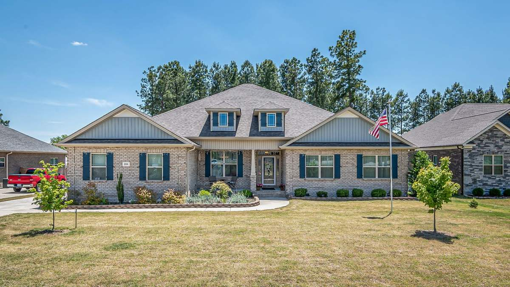
Richmond Hill, GA
Bryan County, not Chatham – sandy loam over clay, the Ogeechee River on the eastern edge, and a building boom that has not slowed down.
Foundation repair in Richmond Hill, GA →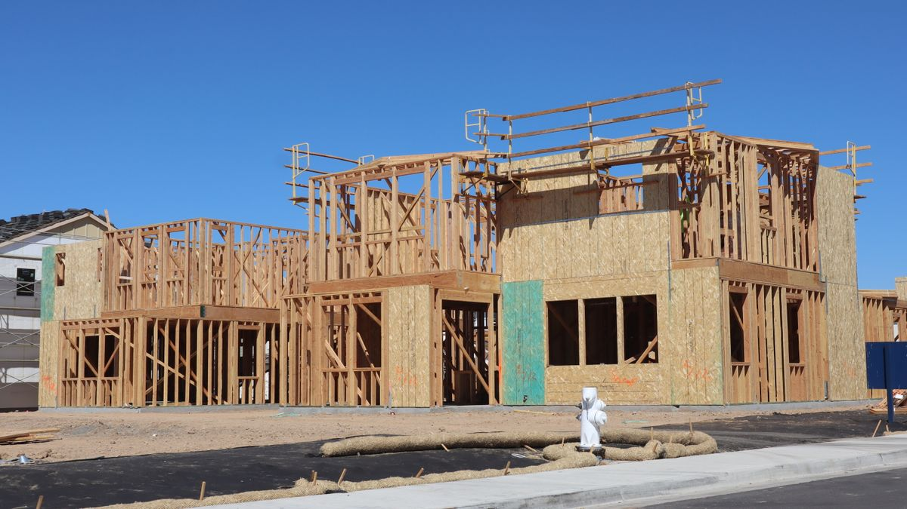
Rincon
Effingham County's largest city, up more than 160% since 2000 – almost entirely new houses on ground that was farm or timber a generation ago.
Foundation repair in Rincon →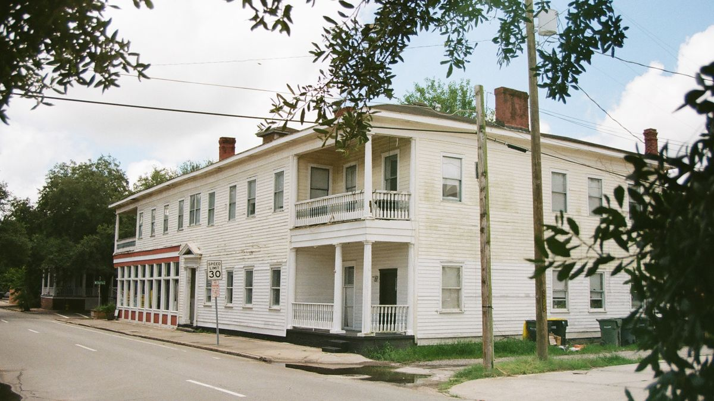
Springfield
Effingham's county seat since 1799 – a small historic core with new subdivisions spreading out around it.
Foundation repair in Springfield →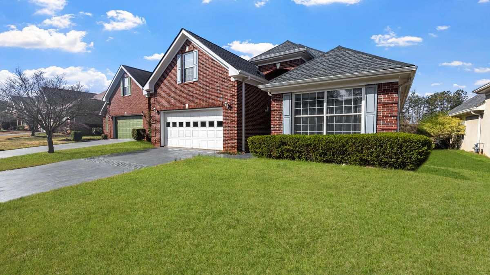
Hinesville
Liberty County's seat and Fort Stewart's home town – a rental-heavy housing stock that changes hands faster than anywhere else in the region.
Foundation repair in Hinesville →Somewhere we haven't written up yet
Eighteen pages covers the Savannah metro and the towns around it, but it is not every address in four counties. Smaller places in between – Vernonburg, Montgomery, Guyton, Ellabell, Pembroke – are usually still a yes.
We would rather tell you plainly that somewhere is outside what we cover than take the call and then not turn up, so ask.
Check your address
Quickest way to find out is to ask. No obligation, and we'll say so plainly if you're outside what we cover.
Ready for a look at it?
Free structural inspection anywhere in our service area, with measurements and a written scope.